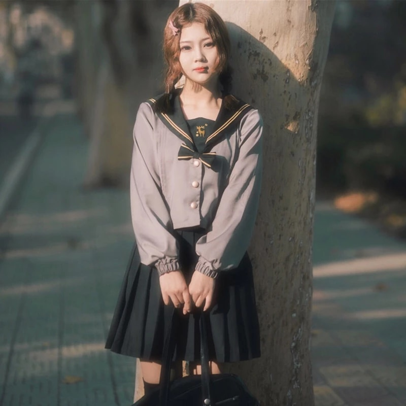
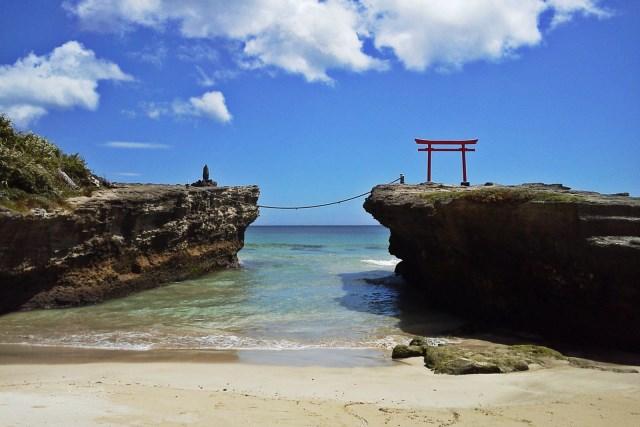
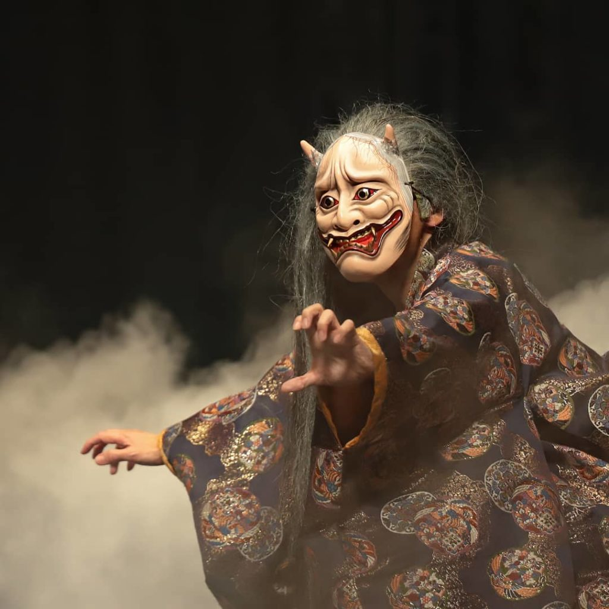

This story about young girl named Hatsune. She was born in 1995 near small city Tokuharu.
 Hatsune in middle school
From her childhood she was dreaming about living in a big city but parents had no money on this. Every day Hatsune learned physics for her dream.
Our heroine got it. On her birthday she goes to university of big city...
But it is not a dream...
On Hatsune`s first day she was beaten by her new "friend". Her name Miku. Young and suppressed, Hatsune ran away for few days. For everyone its was a childplay.
Miku continued her tirrany but Hatsune was accustomed to... or not... After year Miku`s corpse was found. It got no violence trase. This is not a suicede for sure. Her pale body towerd on Tokyo. On her sad dead face was trace of tears.
Police was thinking that killer is Hatsune. But they was wrong. Hatsune`s life is hell but she was always kind even with Miku. She never
wanted evil.
After a week corpse of Hatsune was found near the sea. It seemed thath she was crawling to it. Her beautyful pale face has a smile. Kindest smile I ever know...

I know who killed them all. Its Hukashi Namuyaki - a vengance spirit of old man. First thing he kills abuser. Usually, Hukashi dosent even touch a victim. Only way it can hurt her, it positive emoutional link with an abuser. Hatsune dosen`t like Miku but she actually dosen`t hate her. We can check it by her diary. Maybe the could be friends...
